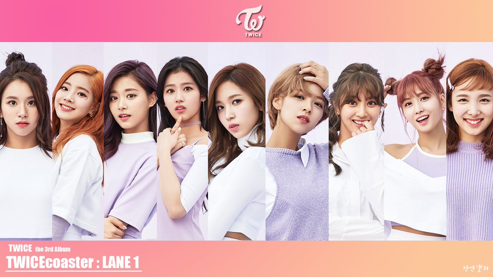

TWICE는 JYP엔터테인먼트에서 2015년에 선보인 아이돌 그룹으로 한국인 5명, 일본인 3명, 대만인 1명으로 이루어진 9인조 다국적 걸그룹이다.
엠넷의 서바이벌 프로그램 SIXTEEN을 통해 나연, 정연, 모모, 사나, 지효, 미나, 다현, 채영, 쯔위(나이 순)가 선발되어 TWICE 멤버로 활동하고 있다.
데뷔년도부터 지금까지 많은 기록들을 세우고 있으며[5], K-POP을 대표하는 걸그룹 중 하나로 활동하고 있다.